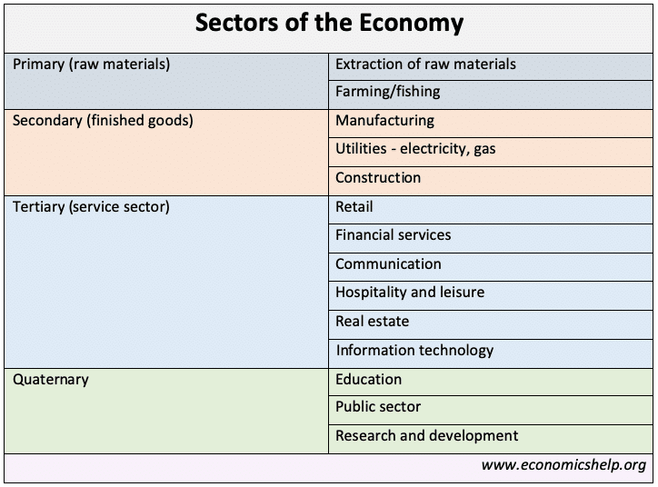

Metal Mining in the Canadian Shield
A sector is a segment of the economy where industries operate under similar or identical commercial activities.
Image: Sectors of the Economy - (www.economicshelp.org)
This is the sector where minerals and more specifically - metals, are mined, extracted, and processed into a state that can be used by manufacturing companies.
This is the sector where metals are shaped using processes such as milling, grinding, welding, soldering, and many more. They are made into usable products and structural building blocks which then move on to be used by consumer or construction companies.
This is the sector where those products are then marketed to be sold in-stores, online, sold directly back to the second sector for constructional uses, or used in IT workplaces.
This is the sector where you can often see those products being used or present. Even education environments have begun to see an increase of technology in classrooms, as so globally.